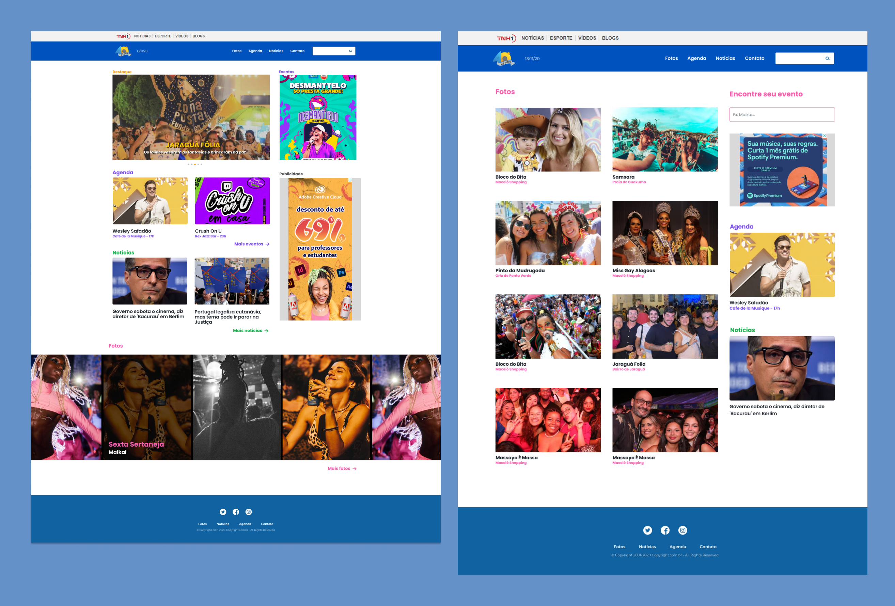
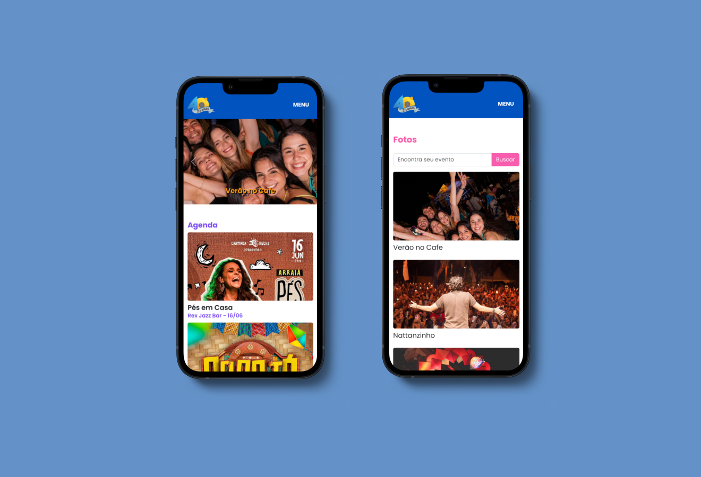

Maceio40Graus
Projeto fullstack para uma empresa de cobertura fotográfica que também atua como portal de notícia e divulgação de eventos. Front feito com HTML, CSS, SASS e Bootstrap e o back com PHP + Wordpress como CMS.


Projeto fullstack para uma empresa de cobertura fotográfica que também atua como portal de notícia e divulgação de eventos. Front feito com HTML, CSS, SASS e Bootstrap e o back com PHP + Wordpress como CMS.